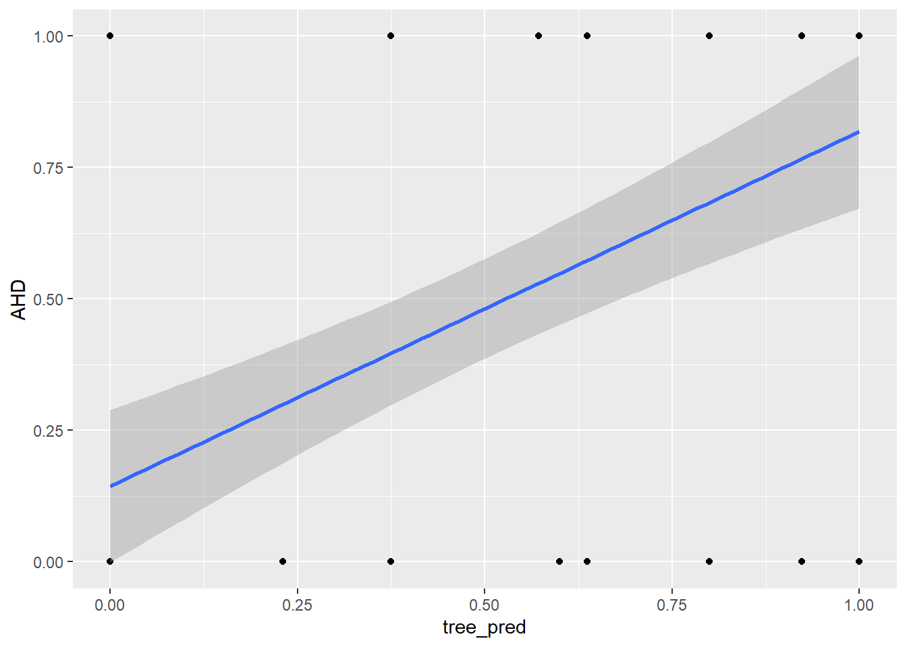

rm(list = ls())
library(tidyverse)
library(glmnet)
library(tree)
library(rpart)
library(rpart.plot)
library(randomForest)
# read in csv
heart_raw <- read_csv("seminar-material/Heart.csv")Student Solution
The following proposed solution uses the “Heart.csv” file to predict incidences of heart disease among patients (i.e. the “AHD” variable). As this is a discrete outcome, some methods will use classification models.
loading packages & data
Clean data & prepare training + testing files
Convert categorical variables to factors
heart_cleaned = heart_raw %>%
drop_na() %>%
mutate(across(c(ChestPain, Thal), factor)) %>%
mutate(AHD = ifelse(AHD == "No",
0,
1)) %>%
select(-...1)Create training and test data
set.seed(1)
training_list = sample(1:nrow(heart_cleaned), 3*nrow(heart_cleaned)/4)
training_set = heart_cleaned %>%
filter(row_number() %in% training_list)
# covariates in training set
training_set_x = training_set %>%
select(-AHD)
# y var in training set
training_set_y = training_set %>%
select(AHD)
test_set = heart_cleaned %>%
filter(!row_number() %in% training_list)
# covariates in test set
test_set_x = test_set %>%
select(-AHD)
# y var in test set
test_set_y = test_set %>%
select(AHD)Linear Probability Model
Estimate LPM
lm_heart = lm(AHD ~., data = training_set)
summary(lm_heart)
Call:
lm(formula = AHD ~ ., data = training_set)
Residuals:
Min 1Q Median 3Q Max
-0.95305 -0.22780 -0.03695 0.18969 0.93653
Coefficients:
Estimate Std. Error t value Pr(>|t|)
(Intercept) 0.2421555 0.3864105 0.627 0.531567
Age -0.0027566 0.0033881 -0.814 0.416812
Sex 0.1790580 0.0584518 3.063 0.002483 **
ChestPainnonanginal -0.2186487 0.0646517 -3.382 0.000862 ***
ChestPainnontypical -0.1978742 0.0783460 -2.526 0.012305 *
ChestPaintypical -0.2671775 0.0967247 -2.762 0.006262 **
RestBP 0.0027032 0.0014410 1.876 0.062088 .
Chol 0.0004496 0.0004828 0.931 0.352899
Fbs -0.0769553 0.0731226 -1.052 0.293848
RestECG 0.0317033 0.0254639 1.245 0.214543
MaxHR -0.0026952 0.0014136 -1.907 0.057968 .
ExAng 0.0912519 0.0627836 1.453 0.147632
Oldpeak 0.0177934 0.0302302 0.589 0.556778
Slope 0.0854202 0.0547350 1.561 0.120157
Ca 0.1528525 0.0300224 5.091 8.03e-07 ***
Thalnormal -0.0864777 0.1100964 -0.785 0.433083
Thalreversable 0.1085007 0.1029830 1.054 0.293316
---
Signif. codes: 0 '***' 0.001 '**' 0.01 '*' 0.05 '.' 0.1 ' ' 1
Residual standard error: 0.3535 on 205 degrees of freedom
Multiple R-squared: 0.5346, Adjusted R-squared: 0.4982
F-statistic: 14.72 on 16 and 205 DF, p-value: < 2.2e-16Compute and plot predicted values
lm_pred = predict(lm_heart, newdata = test_set_x)
# add to a predictions dataset
predictions_dataset = test_set_y %>%
add_column(lm_pred)
# plotting predictions against actual values of AHD
# plus regression line (with standard errors)
ggplot(predictions_dataset, aes(x = lm_pred, y = AHD)) +
geom_point() +
geom_smooth(method = "lm", se = TRUE)`geom_smooth()` using formula = 'y ~ x'Compute and store MSE
mse_lm = mean((predictions_dataset$lm_pred - predictions_dataset$AHD)^2)Logit
Estimate logit model
logit_heart = glm(AHD ~., data = training_set,
family = binomial(link = "logit"))
summary(logit_heart)
Call:
glm(formula = AHD ~ ., family = binomial(link = "logit"), data = training_set)
Coefficients:
Estimate Std. Error z value Pr(>|z|)
(Intercept) -4.150966 3.435225 -1.208 0.22691
Age -0.023463 0.029751 -0.789 0.43033
Sex 1.804318 0.603192 2.991 0.00278 **
ChestPainnonanginal -1.753466 0.569798 -3.077 0.00209 **
ChestPainnontypical -1.186858 0.659783 -1.799 0.07204 .
ChestPaintypical -2.058178 0.739613 -2.783 0.00539 **
RestBP 0.027662 0.012578 2.199 0.02786 *
Chol 0.006939 0.004460 1.556 0.11969
Fbs -0.580343 0.692135 -0.838 0.40176
RestECG 0.215295 0.217382 0.990 0.32198
MaxHR -0.023207 0.013539 -1.714 0.08651 .
ExAng 0.622182 0.511284 1.217 0.22364
Oldpeak 0.144425 0.283812 0.509 0.61084
Slope 0.873239 0.458705 1.904 0.05695 .
Ca 1.346442 0.315736 4.264 2e-05 ***
Thalnormal -0.093183 0.984062 -0.095 0.92456
Thalreversable 0.942034 0.949106 0.993 0.32093
---
Signif. codes: 0 '***' 0.001 '**' 0.01 '*' 0.05 '.' 0.1 ' ' 1
(Dispersion parameter for binomial family taken to be 1)
Null deviance: 305.95 on 221 degrees of freedom
Residual deviance: 150.14 on 205 degrees of freedom
AIC: 184.14
Number of Fisher Scoring iterations: 6Compute and plot the predicted values. Note, logit is a linear regression of log-odds on covariates. Without specifying type = “response”, it will give you the predicted log-odds. Use type = "response" to convert these log-odds into probabilities using logistic function.
logit_pred = predict(logit_heart, newdata = test_set_x,
type = "response")
# add to a predictions dataset
predictions_dataset = predictions_dataset %>%
add_column(logit_pred)
# plotting predictions against actual values of AHD
# plus regression line (with standard errors)
ggplot(predictions_dataset, aes(x = logit_pred, y = AHD)) +
geom_point() +
geom_smooth(method = "glm",
method.args = list(family = "binomial"),
se = TRUE)`geom_smooth()` using formula = 'y ~ x'Compute and store the MSE
mse_logit = mean((predictions_dataset$logit_pred - predictions_dataset$AHD)^2)LPM with penalisation (Ridge, LASSO)
Create matrix of training data covariates and y values for these glmnet regressions. Noe, -1 removes column of intercepts.
X = model.matrix(~. - 1, data = training_set_x)
y = model.matrix(~. -1, data = training_set_y)Ridge regression (alpha is lasso penalty, lambda is ridge penalty, so alpha = 0). If lambda is not explicitly chosen, glmnet fits the model for a sequence (100) of lambda values and provides regressions for each lambda.
# Ridge (alpha=0)
ridge_lm = glmnet(X, y, alpha = 0)
# LASSO (alpha = 1)
lasso_lm = glmnet(X, y, alpha = 1)Find optimal lambda using cross-validation
cv_ridge = cv.glmnet(X, y, alpha = 0)
plot(cv_ridge)cv_lasso = cv.glmnet(X, y, alpha = 0)
plot(cv_lasso)Can use minimum or highest lambda value within 1 se of the minimum value; i.e. statistically indistiguishable but encourages the most parsimony.
best_lambda_ridge <- cv_ridge$lambda.min
best_lambda_lasso <- cv_lasso$lambda.minRe-estimate using cross-validated lambdas
ridge_lm = glmnet(X, y, alpha = 0, lambda = best_lambda_ridge)
coef(ridge_lm)18 x 1 sparse Matrix of class "dgCMatrix"
s0
(Intercept) 0.1949964465
Age -0.0001486077
Sex 0.1318820062
ChestPainasymptomatic 0.1239429970
ChestPainnonanginal -0.0757550405
ChestPainnontypical -0.0561441225
ChestPaintypical -0.0974488394
RestBP 0.0016269983
Chol 0.0002823434
Fbs -0.0479978216
RestECG 0.0275318571
MaxHR -0.0023282165
ExAng 0.0943465699
Oldpeak 0.0318760159
Slope 0.0596369624
Ca 0.1075913668
Thalnormal -0.1027598013
Thalreversable 0.0933925932lasso_lm = glmnet(X, y, alpha = 1, lambda = best_lambda_lasso)
coef(lasso_lm)18 x 1 sparse Matrix of class "dgCMatrix"
s0
(Intercept) 0.5394031490
Age .
Sex .
ChestPainasymptomatic 0.0311738079
ChestPainnonanginal .
ChestPainnontypical .
ChestPaintypical .
RestBP .
Chol .
Fbs .
RestECG .
MaxHR -0.0004762322
ExAng .
Oldpeak .
Slope .
Ca 0.0056972778
Thalnormal -0.0555254843
Thalreversable . Make predictions on test set
X_test = model.matrix(~. - 1, data = test_set_x)
ridge_lm_pred = predict(ridge_lm, newx = X_test, s = best_lambda_ridge)
lasso_lm_pred = predict(lasso_lm, newx = X_test, s = best_lambda_lasso)Add ridge and lasso logit predictions to predictions dataset
predictions_dataset = predictions_dataset %>%
bind_cols(ridge_lm_pred,
lasso_lm_pred) %>%
rename(ridge_lm_pred = last_col(offset = 1),
lasso_lm_pred = last_col())New names:
• `s1` -> `s1...4`
• `s1` -> `s1...5`Plotting predictions against actual values of AHD with regression line (with standard errors) for Ridge,
ggplot(predictions_dataset, aes(x = ridge_lm_pred, y = AHD)) +
geom_point() +
geom_smooth(method = "lm", se = TRUE)`geom_smooth()` using formula = 'y ~ x'and then LASSO.
ggplot(predictions_dataset, aes(x = lasso_lm_pred, y = AHD)) +
geom_point() +
geom_smooth(method = "lm", se = TRUE)`geom_smooth()` using formula = 'y ~ x'Compute and store MSEs
mse_lm_ridge = mean((predictions_dataset$ridge_lm_pred - predictions_dataset$AHD)^2)
mse_lm_lasso = mean((predictions_dataset$lasso_lm_pred - predictions_dataset$AHD)^2)Logit with penalisation (Ridge, LASSO)
Estimate models
# ridge regression (alpha = 0)
ridge_logit = glmnet(X, y, family = "binomial", alpha = 0)
# LASSO (alpha = 1)
lasso_logit = glmnet(X, y, family = "binomial", alpha = 1)Find optimal lambda using cross-validation
cv_ridge <- cv.glmnet(X, y, family = "binomial", alpha = 0)
plot(cv_ridge)cv_lasso <- cv.glmnet(X, y, family = "binomial", alpha = 1)
plot(cv_lasso)# Best lambda values
best_lambda_ridge <- cv_ridge$lambda.min
best_lambda_lasso <- cv_lasso$lambda.minRe-estimate using cross-validated lambdas
ridge_logit = glmnet(X, y, family = "binomial",
alpha = 0, lambda = best_lambda_ridge)
coef(ridge_logit)18 x 1 sparse Matrix of class "dgCMatrix"
s0
(Intercept) -2.661402839
Age -0.002610642
Sex 0.957860963
ChestPainasymptomatic 0.769543615
ChestPainnonanginal -0.526442599
ChestPainnontypical -0.259377844
ChestPaintypical -0.613834638
RestBP 0.012988845
Chol 0.002782430
Fbs -0.292254411
RestECG 0.182781847
MaxHR -0.014358323
ExAng 0.540745355
Oldpeak 0.221090359
Slope 0.407296108
Ca 0.746793790
Thalnormal -0.495527722
Thalreversable 0.564571575lasso_logit = glmnet(X, y, family = "binomial",alpha = 1,
lambda = best_lambda_lasso)
coef(lasso_logit)18 x 1 sparse Matrix of class "dgCMatrix"
s0
(Intercept) -3.162812284
Age .
Sex 1.042538876
ChestPainasymptomatic 1.353767797
ChestPainnonanginal .
ChestPainnontypical .
ChestPaintypical .
RestBP 0.011537202
Chol 0.002119158
Fbs -0.070976617
RestECG 0.114921995
MaxHR -0.014420841
ExAng 0.481805396
Oldpeak 0.144953650
Slope 0.429642894
Ca 0.888321133
Thalnormal -0.308037617
Thalreversable 0.684159842Outside of sample rediction plotted
ridge_logit_pred = predict(ridge_logit, newx = X_test, s = best_lambda_ridge, type = "response")
lasso_logit_pred = predict(lasso_logit, newx = X_test, s = best_lambda_lasso, type = "response")
# add ridge and lasso logit predictions to predictions dataset
predictions_dataset = predictions_dataset %>%
bind_cols(ridge_logit_pred,
lasso_logit_pred) %>%
rename(ridge_logit_pred = last_col(offset = 1),
lasso_logit_pred = last_col())New names:
• `s1` -> `s1...6`
• `s1` -> `s1...7`# plotting predictions against actual values of AHD
# plus regression line (with standard errors)
ggplot(predictions_dataset, aes(x = ridge_logit_pred, y = AHD)) +
geom_point() +
geom_smooth(method = "glm",
method.args = list(family = "binomial"),
se = TRUE)`geom_smooth()` using formula = 'y ~ x'And for LASSO
ggplot(predictions_dataset, aes(x = lasso_logit_pred, y = AHD)) +
geom_point() +
geom_smooth(method = "glm",
method.args = list(family = "binomial"),
se = TRUE)`geom_smooth()` using formula = 'y ~ x'Compute and store MSE
mse_logit_ridge = mean((predictions_dataset$ridge_logit_pred - predictions_dataset$AHD)^2)
mse_logit_lasso = mean((predictions_dataset$lasso_logit_pred - predictions_dataset$AHD)^2)Regression tree (with tree)
Begin by converting AHD to factor variable
training_set_AHD_fact = training_set %>%
mutate(AHD = as.factor(AHD))Estimate and plot tree using tree
tree_heart = tree(AHD ~., data = training_set_AHD_fact)
summary(tree_heart)
Classification tree:
tree(formula = AHD ~ ., data = training_set_AHD_fact)
Variables actually used in tree construction:
[1] "Thal" "Ca" "RestBP" "Chol" "MaxHR" "Oldpeak"
[7] "Slope" "Sex" "ChestPain"
Number of terminal nodes: 17
Residual mean deviance: 0.4809 = 98.57 / 205
Misclassification error rate: 0.1126 = 25 / 222 tree_heartnode), split, n, deviance, yval, (yprob)
* denotes terminal node
1) root 222 306.000 0 ( 0.54505 0.45495 )
2) Thal: normal 125 137.800 0 ( 0.76000 0.24000 )
4) Ca < 0.5 86 61.820 0 ( 0.88372 0.11628 )
8) RestBP < 156.5 81 42.780 0 ( 0.92593 0.07407 )
16) Chol < 228.5 32 0.000 0 ( 1.00000 0.00000 ) *
17) Chol > 228.5 49 36.430 0 ( 0.87755 0.12245 )
34) MaxHR < 169.5 30 30.020 0 ( 0.80000 0.20000 )
68) Oldpeak < 1.25 25 18.350 0 ( 0.88000 0.12000 )
136) Oldpeak < 0.1 13 14.050 0 ( 0.76923 0.23077 ) *
137) Oldpeak > 0.1 12 0.000 0 ( 1.00000 0.00000 ) *
69) Oldpeak > 1.25 5 6.730 1 ( 0.40000 0.60000 ) *
35) MaxHR > 169.5 19 0.000 0 ( 1.00000 0.00000 ) *
9) RestBP > 156.5 5 5.004 1 ( 0.20000 0.80000 ) *
5) Ca > 0.5 39 54.040 1 ( 0.48718 0.51282 )
10) Slope < 1.5 26 32.100 0 ( 0.69231 0.30769 )
20) Sex < 0.5 13 0.000 0 ( 1.00000 0.00000 ) *
21) Sex > 0.5 13 17.320 1 ( 0.38462 0.61538 )
42) ChestPain: nonanginal,nontypical,typical 8 10.590 0 ( 0.62500 0.37500 ) *
43) ChestPain: asymptomatic 5 0.000 1 ( 0.00000 1.00000 ) *
11) Slope > 1.5 13 7.051 1 ( 0.07692 0.92308 ) *
3) Thal: fixed,reversable 97 112.800 1 ( 0.26804 0.73196 )
6) ChestPain: nonanginal,nontypical,typical 37 51.050 0 ( 0.54054 0.45946 )
12) Ca < 0.5 23 26.400 0 ( 0.73913 0.26087 )
24) Slope < 1.5 7 0.000 0 ( 1.00000 0.00000 ) *
25) Slope > 1.5 16 21.170 0 ( 0.62500 0.37500 ) *
13) Ca > 0.5 14 14.550 1 ( 0.21429 0.78571 )
26) Chol < 232 7 9.561 1 ( 0.42857 0.57143 ) *
27) Chol > 232 7 0.000 1 ( 0.00000 1.00000 ) *
7) ChestPain: asymptomatic 60 39.010 1 ( 0.10000 0.90000 )
14) Oldpeak < 0.55 11 14.420 1 ( 0.36364 0.63636 ) *
15) Oldpeak > 0.55 49 16.710 1 ( 0.04082 0.95918 )
30) Thal: fixed 10 10.010 1 ( 0.20000 0.80000 ) *
31) Thal: reversable 39 0.000 1 ( 0.00000 1.00000 ) *# plot tree
plot(tree_heart)
text(tree_heart, pretty = 1)Generate predicted values using type = "vector" to predict the probability that AHD = 1. Alternatively, can use type = "class" to predict the actual class. This produces 2 columns: the first has the probability AHD = 0 and the second the probability AHD = 1 (which is what we’re interested in).
tree_pred = predict(tree_heart, newdata = test_set_x, type = "vector")
# add predictions to predictions dataset
# note we only keep the 2nd column of `tree_pred` as explained above
predictions_dataset = predictions_dataset %>%
bind_cols(tree_pred[,2]) %>%
rename(tree_pred = last_col())New names:
• `` -> `...8`# plot predicted values against actual values
ggplot(predictions_dataset, aes(x = tree_pred, y = AHD)) +
geom_point() +
geom_smooth(method = "lm",
se = TRUE)`geom_smooth()` using formula = 'y ~ x'
Compute and store MSE. Note, this is the same as the misclassification rate for a binary (0/1) variable. Trees are very sensitive to the sample (overfits - high variance). The tendency to overfit is because of sequential design of trees.
mse_tree = mean((predictions_dataset$AHD - predictions_dataset$tree_pred)^2)Pruned tree
set.seed(789)
cvtree_heart = cv.tree(tree_heart, FUN = prune.tree)
names(cvtree_heart)[1] "size" "dev" "k" "method"cvtree_heart$size
[1] 17 16 15 14 13 11 10 9 8 7 6 5 4 3 2 1
$dev
[1] 407.5569 385.4016 366.2669 367.3015 343.6143 327.9664 328.5242 328.5242
[9] 325.9152 267.8555 259.0320 260.1638 260.1638 277.7223 278.2690 309.3478
$k
[1] -Inf 4.300942 4.947779 4.987522 5.232343 6.376143 6.703877
[8] 6.738228 7.877432 10.098779 14.044109 14.773333 14.892341 21.905580
[15] 22.713030 55.410752
$method
[1] "deviance"
attr(,"class")
[1] "prune" "tree.sequence"Plot size of tree and cost-complexity parameter against deviance (number of misclassifications). We can visually see that a tree size of 6 (6 terminal nodes) gives minimal deviance. Increasing the tree size beyond that is resulting in overfitting.
par(mfrow = c(1,2))
plot(cvtree_heart$size, cvtree_heart$dev, type = "b")
plot(cvtree_heart$k, cvtree_heart$dev, type = "b")
#returning plots back to 1 plot per figure
par(mfrow = c(1,1))
# the minimal deviance obtains this value, 6
optimal_size = cvtree_heart$size[which.min(cvtree_heart$dev)]
optimal_size[1] 6Prune tree and generate new predicted values
prune_heart = prune.tree(tree_heart, best = optimal_size)
plot(prune_heart)
text(prune_heart, pretty = 1)# generate predicted values from pruned tree
prune_tree_pred = predict(prune_heart, newdata = test_set_x, type = "vector")
# add predictions to predictions dataset
predictions_dataset = predictions_dataset %>%
bind_cols(prune_tree_pred[,2]) %>%
rename(prune_tree_pred = last_col())New names:
• `` -> `...9`Compute and store MSE. Note. this is the same as the misclassification rate for a binary (0/1) variable.
mse_prune_tree = mean((predictions_dataset$AHD - predictions_dataset$prune_tree_pred)^2)Regression tree (with rpart)
AHD is a binary variable, so the class method is assumed
tree_heart_rpart = rpart(AHD ~., data = training_set_AHD_fact, method = "class")
summary(tree_heart_rpart)Call:
rpart(formula = AHD ~ ., data = training_set_AHD_fact, method = "class")
n= 222
CP nsplit rel error xerror xstd
1 0.44554455 0 1.0000000 1.0000000 0.07346078
2 0.05940594 1 0.5544554 0.7128713 0.06905800
3 0.05445545 3 0.4356436 0.6237624 0.06650755
4 0.01000000 5 0.3267327 0.5049505 0.06205621
Variable importance
Thal MaxHR Ca ChestPain Sex Oldpeak ExAng Slope
22 12 11 10 10 9 8 7
Age RestBP RestECG Chol
4 2 2 2
Node number 1: 222 observations, complexity param=0.4455446
predicted class=0 expected loss=0.454955 P(node) =1
class counts: 121 101
probabilities: 0.545 0.455
left son=2 (125 obs) right son=3 (97 obs)
Primary splits:
Thal splits as RLR, improve=26.43724, (0 missing)
Ca < 0.5 to the left, improve=26.35143, (0 missing)
MaxHR < 150.5 to the right, improve=25.49278, (0 missing)
ChestPain splits as RLLL, improve=24.75130, (0 missing)
Oldpeak < 1.7 to the left, improve=19.60541, (0 missing)
Surrogate splits:
MaxHR < 150.5 to the right, agree=0.707, adj=0.330, (0 split)
Slope < 1.5 to the left, agree=0.698, adj=0.309, (0 split)
Oldpeak < 1.55 to the left, agree=0.694, adj=0.299, (0 split)
ExAng < 0.5 to the left, agree=0.685, adj=0.278, (0 split)
Sex < 0.5 to the left, agree=0.649, adj=0.196, (0 split)
Node number 2: 125 observations, complexity param=0.05940594
predicted class=0 expected loss=0.24 P(node) =0.5630631
class counts: 95 30
probabilities: 0.760 0.240
left son=4 (86 obs) right son=5 (39 obs)
Primary splits:
Ca < 0.5 to the left, improve=8.438402, (0 missing)
ChestPain splits as RLLR, improve=6.923375, (0 missing)
MaxHR < 119.5 to the right, improve=5.609579, (0 missing)
Oldpeak < 1.7 to the left, improve=4.833038, (0 missing)
ExAng < 0.5 to the left, improve=4.474680, (0 missing)
Surrogate splits:
Age < 62.5 to the left, agree=0.760, adj=0.231, (0 split)
MaxHR < 130.5 to the right, agree=0.736, adj=0.154, (0 split)
ChestPain splits as LLLR, agree=0.704, adj=0.051, (0 split)
Oldpeak < 1.7 to the left, agree=0.704, adj=0.051, (0 split)
Node number 3: 97 observations, complexity param=0.05445545
predicted class=1 expected loss=0.2680412 P(node) =0.4369369
class counts: 26 71
probabilities: 0.268 0.732
left son=6 (37 obs) right son=7 (60 obs)
Primary splits:
ChestPain splits as RLLL, improve=8.883477, (0 missing)
Ca < 0.5 to the left, improve=8.188351, (0 missing)
MaxHR < 144.5 to the right, improve=6.623394, (0 missing)
Oldpeak < 0.7 to the left, improve=6.113597, (0 missing)
Slope < 1.5 to the left, improve=3.431719, (0 missing)
Surrogate splits:
MaxHR < 144.5 to the right, agree=0.732, adj=0.297, (0 split)
ExAng < 0.5 to the left, agree=0.732, adj=0.297, (0 split)
Oldpeak < 0.7 to the left, agree=0.680, adj=0.162, (0 split)
RestBP < 109 to the left, agree=0.660, adj=0.108, (0 split)
Age < 63.5 to the right, agree=0.649, adj=0.081, (0 split)
Node number 4: 86 observations
predicted class=0 expected loss=0.1162791 P(node) =0.3873874
class counts: 76 10
probabilities: 0.884 0.116
Node number 5: 39 observations, complexity param=0.05940594
predicted class=1 expected loss=0.4871795 P(node) =0.1756757
class counts: 19 20
probabilities: 0.487 0.513
left son=10 (17 obs) right son=11 (22 obs)
Primary splits:
Sex < 0.5 to the left, improve=6.818730, (0 missing)
Slope < 1.5 to the left, improve=6.564103, (0 missing)
ChestPain splits as RLLL, improve=5.818730, (0 missing)
ExAng < 0.5 to the left, improve=2.857309, (0 missing)
RestBP < 139 to the right, improve=2.632007, (0 missing)
Surrogate splits:
ChestPain splits as RLLR, agree=0.718, adj=0.353, (0 split)
RestECG < 1 to the left, agree=0.718, adj=0.353, (0 split)
Age < 56.5 to the right, agree=0.692, adj=0.294, (0 split)
RestBP < 136 to the right, agree=0.667, adj=0.235, (0 split)
Chol < 292 to the right, agree=0.667, adj=0.235, (0 split)
Node number 6: 37 observations, complexity param=0.05445545
predicted class=0 expected loss=0.4594595 P(node) =0.1666667
class counts: 20 17
probabilities: 0.541 0.459
left son=12 (23 obs) right son=13 (14 obs)
Primary splits:
Ca < 0.5 to the left, improve=4.794527, (0 missing)
MaxHR < 143.5 to the right, improve=4.386315, (0 missing)
Slope < 1.5 to the left, improve=2.413343, (0 missing)
Chol < 205.5 to the left, improve=1.730759, (0 missing)
RestBP < 122.5 to the left, improve=1.359745, (0 missing)
Surrogate splits:
MaxHR < 146.5 to the right, agree=0.730, adj=0.286, (0 split)
Oldpeak < 1.95 to the left, agree=0.703, adj=0.214, (0 split)
Age < 68.5 to the left, agree=0.676, adj=0.143, (0 split)
ChestPain splits as -RLL, agree=0.676, adj=0.143, (0 split)
Chol < 190.5 to the right, agree=0.649, adj=0.071, (0 split)
Node number 7: 60 observations
predicted class=1 expected loss=0.1 P(node) =0.2702703
class counts: 6 54
probabilities: 0.100 0.900
Node number 10: 17 observations
predicted class=0 expected loss=0.1764706 P(node) =0.07657658
class counts: 14 3
probabilities: 0.824 0.176
Node number 11: 22 observations
predicted class=1 expected loss=0.2272727 P(node) =0.0990991
class counts: 5 17
probabilities: 0.227 0.773
Node number 12: 23 observations
predicted class=0 expected loss=0.2608696 P(node) =0.1036036
class counts: 17 6
probabilities: 0.739 0.261
Node number 13: 14 observations
predicted class=1 expected loss=0.2142857 P(node) =0.06306306
class counts: 3 11
probabilities: 0.214 0.786 tree_heart_rpartn= 222
node), split, n, loss, yval, (yprob)
* denotes terminal node
1) root 222 101 0 (0.5450450 0.4549550)
2) Thal=normal 125 30 0 (0.7600000 0.2400000)
4) Ca< 0.5 86 10 0 (0.8837209 0.1162791) *
5) Ca>=0.5 39 19 1 (0.4871795 0.5128205)
10) Sex< 0.5 17 3 0 (0.8235294 0.1764706) *
11) Sex>=0.5 22 5 1 (0.2272727 0.7727273) *
3) Thal=fixed,reversable 97 26 1 (0.2680412 0.7319588)
6) ChestPain=nonanginal,nontypical,typical 37 17 0 (0.5405405 0.4594595)
12) Ca< 0.5 23 6 0 (0.7391304 0.2608696) *
13) Ca>=0.5 14 3 1 (0.2142857 0.7857143) *
7) ChestPain=asymptomatic 60 6 1 (0.1000000 0.9000000) *# plot tree
rpart.plot(tree_heart_rpart)Generate and plot predicted values
tree_pred_rpart = predict(tree_heart_rpart, newdata = test_set_x, type = "class")
# add predictions to predictions dataset
predictions_dataset = predictions_dataset %>%
bind_cols(as.numeric(tree_pred_rpart)-1) %>%
rename(tree_pred_rpart = last_col())New names:
• `` -> `...10`# plot predicted values against actual values
ggplot(predictions_dataset, aes(x = tree_pred_rpart, y = AHD)) +
geom_point() +
geom_smooth(method = "lm",
se = TRUE)`geom_smooth()` using formula = 'y ~ x'Compute and store MSE. Note, this is the same as the misclassification rate for a binary (0/1) variable. Trees are very sensitive to the sample (overfits - high variance). They have a tendency to overfit is because of sequential design of trees.
mse_tree_rpart = mean((predictions_dataset$AHD - predictions_dataset$tree_pred_rpart)^2)Plot cost-complexity parameter of tree
plotcp(tree_heart_rpart)Use CV to pick optimal cp parameter
optimal_cp = tree_heart_rpart$cptable[which.min(tree_heart_rpart$cptable[,"xerror"]), "CP"]
optimal_cp[1] 0.01Prune the tree
prune_heart_rpart = prune(tree_heart_rpart, cp = optimal_cp)
# plot pruned tree
rpart.plot(prune_heart_rpart)
Generate predicted values from pruned tree. Note, these predictions are saved as factors.
prune_tree_rpart_pred = predict(prune_heart_rpart, newdata = test_set_x, type = "class")
# add predictions to predictions dataset
predictions_dataset = predictions_dataset %>%
bind_cols(as.numeric(prune_tree_rpart_pred)-1) %>%
rename(prune_tree_rpart_pred = last_col())New names:
• `` -> `...11`Compute and store MSE. Note, this is the same as the misclassification rate for a binary (0/1) variable.
mse_prune_tree_rpart = mean((predictions_dataset$AHD - predictions_dataset$prune_tree_rpart_pred)^2)Bagging
set.seed(8)
# number of regressors is total number of x variables
bag_heart = randomForest(AHD ~., data = training_set_AHD_fact, mtry = ncol(training_set_AHD_fact)-1,
importance = TRUE)
bag_heart
Call:
randomForest(formula = AHD ~ ., data = training_set_AHD_fact, mtry = ncol(training_set_AHD_fact) - 1, importance = TRUE)
Type of random forest: classification
Number of trees: 500
No. of variables tried at each split: 13
OOB estimate of error rate: 20.72%
Confusion matrix:
0 1 class.error
0 98 23 0.1900826
1 23 78 0.2277228Generate predictions
bag_pred = predict(bag_heart, newdata = test_set_x)
# add predictions to predictions dataset
predictions_dataset = predictions_dataset %>%
bind_cols(as.numeric(bag_pred)-1) %>%
rename(bag_pred = last_col())New names:
• `` -> `...12`Compute and store MSE. Note, this is the same as the misclassification rate for a binary (0/1) variable.
mse_bag = mean((predictions_dataset$bag_pred - predictions_dataset$AHD)^2)Random Forest
set.seed(9)
# number of x variables selected for inclusion in each tree is lower than the number of x variables. I chose 5
forest_heart = randomForest(AHD ~., data = training_set_AHD_fact, mtry = 5,
importance = TRUE)
forest_heart
Call:
randomForest(formula = AHD ~ ., data = training_set_AHD_fact, mtry = 5, importance = TRUE)
Type of random forest: classification
Number of trees: 500
No. of variables tried at each split: 5
OOB estimate of error rate: 18.47%
Confusion matrix:
0 1 class.error
0 106 15 0.1239669
1 26 75 0.2574257Generate predictions
forest_pred = predict(forest_heart, newdata = test_set_x)
# add predictions to predictions dataset
predictions_dataset = predictions_dataset %>%
bind_cols(as.numeric(forest_pred)-1) %>%
rename(forest_pred = last_col())New names:
• `` -> `...13`Compute and store MSE. Note, this is the same as the misclassification rate for a binary (0/1) variable.
mse_forest = mean((predictions_dataset$forest_pred - predictions_dataset$AHD)^2)View importance of each variable
importance(forest_heart) 0 1 MeanDecreaseAccuracy MeanDecreaseGini
Age 7.4813332 1.5625272 6.72565563 8.4384225
Sex 14.8645298 7.7057242 15.96165461 4.8548739
ChestPain 9.3111531 11.5074587 14.94983417 12.3559486
RestBP 1.5848401 2.0435154 2.35415853 8.4844240
Chol 2.1655147 -2.8478400 -0.09698318 8.5918130
Fbs 1.5604704 -0.6417825 0.90755919 0.7394629
RestECG 0.2401243 0.8172705 0.71520690 1.7564494
MaxHR 11.0172530 5.9234611 12.57651338 16.8039954
ExAng 4.6298814 4.9564873 6.90975700 4.9899581
Oldpeak 10.1551432 10.9200106 15.31150069 10.0643034
Slope 8.7171783 8.7564891 12.41001509 6.3931459
Ca 21.8972697 19.0532580 26.53962079 15.5191479
Thal 12.4311268 8.8729300 14.76064804 10.5493398varImpPlot(forest_heart)Comparison
# Get variables starting with "mse_"
mse_vars = ls(pattern = "^mse_")
# Create dataframe with variable names and values
mse_df = data.frame(
method = sub("^mse_", "", mse_vars),
mse = sapply(mse_vars, get),
stringsAsFactors = FALSE)
mse_df = mse_df %>%
arrange(mse)
view(mse_df)
mse_df method mse
mse_logit_ridge logit_ridge 0.09556880
mse_logit_lasso logit_lasso 0.09775592
mse_logit logit 0.10001662
mse_lm_ridge lm_ridge 0.10308230
mse_lm lm 0.10644605
mse_prune_tree prune_tree 0.17054945
mse_forest forest 0.17333333
mse_tree tree 0.18526094
mse_bag bag 0.20000000
mse_prune_tree_rpart prune_tree_rpart 0.20000000
mse_tree_rpart tree_rpart 0.20000000
mse_lm_lasso lm_lasso 0.21966165To view predictions_dataset for probabilistic/factor predictions under each model, run
view(predictions_dataset)